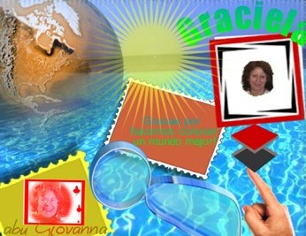

Sobre el filo de la esperanza

Así como la vida emana del silencio del amor, La
Vida nació del Silencio Eterno
El amor es el cauce de un río de Vida a través del tiempo y del
espacio
¡Qué fuerza tiene el conocimiento aprehendido en las experiencias
personales!
No busques a Dios en lugares santos, si donde lo has perdido ha sido en tu corazón
¿Sabes que tu mirada verá aquello que le permita la libertad de
tu alma?
¡Qué bella es la música del arroyuelo, cuyo silencio penetra
en el fondo de mi alma!
Angel Sanz Goena
 |
 |
EL LARGO SUEÑO DE ALGUNOS CAMINOS
Autor: © Jesús Alejandro GodoyFue necesario obtener, para darme cuenta que no era tan magnífico; fue necesario padecer, para saber que realmente no valía la pena. Fue realmente vital el perderme, para saber que lo que estaba persiguiendo no era valioso; fue necesario el sufrir por amor, para saber, que el amor se sustenta por sí solo y no se encierra debajo de ninguna piel. Fue necesario el desastre, para darme cuenta que mis cosas no eran realmente lo importante; fue necesaria la muerte, para dejar de temerle a la vida. Fue de importancia la traición, para valorar a los que recorrieron mis sombras sin dejarme; fue una revelación la riqueza, para dejar en mí, la verdad sobre ser realmente rico. Fueron irreemplazables mis demonios para explicar a mi Dios, fueron justificables mis miserias, para disfrutar mi evolución. Fue necesaria mi inacción, para maravillarme con mis obras; fue, necesario el océano, para asombrarme con el rocío de las madrugadas. Fueron necesarios mis engaños, para darme cuenta que aún faltaba una verdad; fue necesario el silencio, para saber que todo realmente nace cuando la palabra se ha sabido explicar por sí misma, y los hechos despiertan luego de un largo sueño. |
 TU VIDA Y LAS ESTACIONES.
TU VIDA Y LAS ESTACIONES.
Tu vida transita
las cuatro estaciones
de la naturaleza.
Naces en Primavera
de la semilla surge el brote
creces con miles de colores
aromas y cantos.
tu niñez, tu adolescencia.
Eres flor.
En el Verano
resplandecen los verdores
flamean las espigas
dentro de sus chalas
se alinean las sonrisas del maíz.
Eres fruto.
Otoño
de amarillo se viste tu follaje
en tus sienes las primeras canas
caen tus hojas
el color de tu vida
se desvanece.
Eres raiz.
En el Invierno
despojo y quietud.
Eres espera.
Vive tu niñez y tu juventud
con el encanto
de la Primavera
La madurez
te dará
un largo Verano.
Con serenidad y paciencia
vivirás tu Otoño.
No sólo
vivas el Invierno
porque solo conocerás
la muerte de tu vida.
Autor: Victoria Servidio
. .
. . .
Volver
Algunos aportes anteriores
Tomar la decisión de despedirse...
Queridas Amistades,
Si estás leyendo estas palabras será porque no pasaste mi correo por alto, por lo cual te agradezco...
Aunque hay personas que dicen no creer en la palabra "AMISTAD",
pero sí la usan cuando les es conveniente... Para mí todas las
personas que he tratado a través de estos largos años,
algunos que se han ido, otros que están, pero se han retirado de mí,
por lo que haya sido su razón... y otras siguen y seguirán siendo
mis entrañables amigas, pues yo sí creo y le he escrito
mucho a la Amistad.
Que difícil es despedirse de lo que te "acomoda". A veces,
desde esta falsa comodidad nos inmovilizamos y dejamos que la vida transcurra
con úlceras, dolores de espalda, angustia y
decepciones y, dejamos que la vida nos lleve para donde se le ocurra sin poner
conciencia de nuestras decisiones: dejamos de ser protagonistas de nuestra propia
película y pasamos a
transformarnos en los actores de reparto de una película, rutinaria y
sin ninguna emoción, esas películas de las que es mejor dormirlas
que verlas.
Despedirse implica dejar partir en paz a quienes atamos
de distintas formas; implica alejarnos tranquilos de hábitos, costumbres
y situaciones que limitan nuestros crecimientos y que
hacen que el sol no pueda asomarse para iluminarnos.
Tomar la decisión de despedirse es aceptar que ya aprendí y que
necesito seguir, porque en esta película en la que somos los protagonistas
aún quedan miles de escenas
maravillosas que vale la pena vivir.
Estoy en la despedida, reteniendo por última vez
la imagen clara de lo que dejo, con el pecho lleno de emoción. Agradezco
lo que me enseñaron, porque de cada persona que tuve
el gusto de conocer que aprendí algo; agradezco el cariño, los
retos, incluso las descalificacione. Agradezco infinitamente a todas las personas
que me demostraron su amistad hasta
el día de hoy.
Me alejo tranquila; más grande, más libre, porque siempre he tratado
de dar lo mejor de mí, aunque no se puede tener contento a todo el mundo.
De toda mi lista de correos, quedan unos cuantos, pero como se dice: pocos pero
buenos.
Mil gracias a todos.
Autor: Gloria Camacho
"Sagitariana"
GRITA...
¿Por qué escribo?, ¿Porqué lanzo mis palabras al
viento?,
en una comunidad, en un blog, en un espacio, en un correo?
Me lo he preguntado muchas veces...
¿Acaso para que me lean? ¿Acaso para hacerme notar?
¿Acaso para demostrarle al mundo que existo?
¿Acaso para que me halaguen? ¿Acaso para que me critiquen? ¿Por
provocar polémica?
¿Para demostrarme a mí mismo que existe a quien gusta lo que escribo?
¿Porque no tengo más que hacer?
¿para hacer amistades? ¿Acaso para crear historia?
Aún no lo sé...
Es posible que algo de todo esto se produzca cuando lo hago,
pienso que no soy bueno con las palabras...
pues frecuentemente me gana el sentimiento y... se queda ahi la expresión...
y las letras me son fáciles y dilectas...
Pero NO, no creo en verdad que todo lo anterior
sea la base fundamental por la cual escribo...
Te contaré algo...
“Once hombres quisieron pasar un río, el río iba muy crecido...
y después de muchos intentos y de muchos esfuerzos lograron pasar.
Unos lo hicieron por un lado y otros por otro, con lo que no estaban seguros
de que lo hubiesen podido pasar todos.
Se reunieron conforme fueron llegando. Como no se conocían por sus nombres
se contaron, solo sabían que antes de pasar el río eran once.
Uno empezó a contar y solo le dió diez hombres.
Otro dijo: Voy a contar yo, y efectivamente solo eran diez.
Así de uno a otro se fueron contando, unos desde cerca y otros se alejaron
para ver mejor la perspectiva, y en todas las veces que se contaron solo eran
diez... Se sentaron bajo un árbol muy
tristes al comprobar que uno de ellos no estaba. Pasó por allí
un leñador
y al verles tan afligidos les preguntó que ocurría para que tuviesen
aquel semblante; ellos contaron lo sucedido. El leñador se echó
a reír y les dijo: No sois diez, sois once, por lo que estáis
todos...
Le dijo a uno:
A ver cuenta a tus compañeros. Este así lo hizo y contó
diez, entonces el leñador dijo : "sumate a la cuenta". Enseguida
los otros diez se dieron cuenta del error, todo el rato estuvieron contando
a todos menos a si mismos, por eso siempre eran diez...”
Este cuentito sufi ilustra un poco mi sentir... del porqué
escribo...
No escribo para nadie, solo para mí... Para mis reflexiones, para mis
pensamientos, para saber que existo diciéndomelo a mi mismo....
Una persona existe solo porque el otro le contesta...
Si yo hablo y tú no me contestas… ¿Cómo sé
que existo? Realmente nadie existe si no fuese porque alguien nos dice estamos,
por ejemplo: pongo unas palabras y tú me dices lo que te parecen,
buenas o malas, eso ya no es lo importante, lo verdaderamente importante es
que me has contestado…por lo tanto
¡existo!
Si yo ahora escribo y nadie me contesta, puede ser que no exista... Solo yo
me puedo estar creyendo que existo y no sea verdad... Por lo tanto escribo para
demostrarme que existo...
En la vida damos demasiadas cosas por ciertas y a veces; tal vez más
frecuente de lo que es normal... pasamos inadvertidos entre la gente con la
que nos cruzamos, por eso no existimos, o
dejamos que nuestra esencia no exista...
No observamos, no vemos, no notamos, no hablamos, no reímos, no cantamos,
no gritamos, no rozamos, vamos como metidos en nosotros, en ese trozo de miseria
que nos daña y nos
empequeñece...
Si observáramos las caras de los que se cruzan...
Si viéramos nuestro entorno... Si habláramos con todo lo que esté
cerca (independientemente que nos contesten o no)...
Si fuésemos regalando sonrisas... Si cantásemos (alguien nos escuchará,
como dice Laura Pausini)... Quizá por esto me gusta tanto el concepto
de... " mira a Jesús en el otro " esa una lección
grande...
Si gritamos cuando no veamos a nadie... cuando nos sintamos solos... cuando nos necesitemos... seremos conscientes de nuestro existir...
¡¡GRITA!!,
provoca risas, burla, enojo... pero no mueras ahogado en
tu propio grito por callarte... Rózate con el que estés cerca
y no permitas que ese roce sea algo normal, no...
que no sea un roce de metro, o de bus, ¡no!, roza a tu vecina y dile ¡hola!!
Si no le gusta, peor para ella...
Levanta la mirada y pide tu trozo de atención,
pide la ayuda que necesites. (Y si eres alguien que puedes “DAR”
ya sabes, ayuda).
¡Gritale al mundo que existes!
Gritando... quedito...
Autor:César Fdo. Isasi E."
<rasecfie@hotmail.com>
. . .
 A
VECES
A
VECES
A veces no logramos imaginar lo que un gesto nuestro o lo que nos parece una
simple acción del diario quehacer puede provocar en otra
persona. Especialmente si esa persona es una niñita de tan solo diez
años de edad. Les cuento: una amiga mía, a quien no voy a identificar
para
no herir su modestia, contrató a una señora para que trabajara
en su negocio. Hace poco recibió la carta que a continuación transcribo:
10.07.08. Para Cristina
Cristina:
Quiero agradecerle por todo lo que ha ayudado a mi mamá y a nosotros.
Gracias al trabajo que le dio a mamá, ya no pasamos algunas necesidades.
Además mamá ya no pasa llorando como antes. Ahora se ríe
más seguido, que siempre estaba triste.
Cuando me cuenta cómo son ustedes con ella, me emociono.
Mamá se sintió muy bien cuando usted le aumentó el sueldo
y la abrazó, ya que hacía mucho tiempo que nadie la abrazaba.
Me dijo que ya se había olvidado que se sentía tan bien que te
abracen por darte, no por pedirte.
Mamá está muy contenta con ustedes. No le cuente nada porque si
no se enoja conmigo. Es nuestro secreto ¿tá?
Si fueras picaflor
te posarías de flor en flor.
Como no eres picaflor
te vas a posar en mi corazón.
Te quiero mucho,
Noelia.
No vamos a revelar el secreto de Noelia, pero creo que todos
los que leamos esta carta vamos a tener mucho que pensar al respecto.
Hasta siempre.
Autor: Iván Aarón.
. . .
Déjate
llevar... por la mágica palabra de dar; aunque no recibas.
Déjate llevar por la sabiduria de tu yo; aunque no te sigan.
Déjate llevar por el encuentro con tu interior; aunque otros lo olviden.
Déjate llevar; sabiendo que todo es posible
cuando hay Alguien, que te cuida, te arropa y te acompaña siempre.
Aunque no se manifieste, Él está contigo.
Autor: Josefina Algar
josefinaalgar@yahoo.es
. . .
 Dios
te ama...siempre te amará.
Dios
te ama...siempre te amará.
Dios te ama, siempre te amará, seas como seas, hagas
lo que hagas, nunca conseguirás que Dios deje de amarte.
Eres un milagro de su amor. Vive como tal. Agradece cada mañana el nuevo
amanecer, la creación y todo lo que tienes
y sonríe desde el corazón. Dile a Jesús cuanto le amas
y pídele que te acompañe.
Ah, no te olvides decirte que te amas y di.....hoy elijo....ser feliz, ser amor,
ser alegría, ser paz.
Reconoce en cada ser humano a tu hermano, viendo la bondad
de su corazón y amándole como si fuese Jesús,
pues está en su corazón como en el tuyo.
Eres un ser de luz, elévate hacia la luz. Tienes
alas para volar, vuela tras la estela del amor, no te quedes encerrado
en la jaula del miedo anhelando volar, arriésgate, si sale mal, mala
suerte, pero de lo único que podrías arrepentirte
es de no haberte arriesgado en ir en pos de tus sueños.
Cultiva el jardín de tu corazón con flores de paz, humildad, alegría,
respeto, educación, amor, etc.
Lo que cultivas en tu corazón es lo que veras en el mundo, lo que transmitirás
a los demás.
Respétate y haz lo propio con el prójimo y con la naturaleza.
Siembra paz y amor en tu camino, regala sonrisas, abrazos, cariño, etc.
No permitas que se oculte el sol, habiendo rencor en tu corazón, perdona
de corazón y deséale lo mejor a ese hermano.
Cuida las palabras que salen de tus labios, pues volverán a ti. Eres
esclavo de tus palabras y dueño de lo que callas.
Si lo que vas a decir no es más importante que el silencio, no lo digas.
Ninguna palabra que digas, podrá ser borrada,
permanecerá para la eternidad. No juzgues, no eres juez. No critiques,
dedica ese tiempo a alabar a Dios.
Haz todo con amor. Se consciente de todo lo que haces y ofréceselo al
Señor. Hazlo con humildad. Vuélvete niño y
disfruta del paraíso de la creación. Súbete al tiovivo
de la vida. Si te caes, vuélvete a levantar y no te rindas nunca.
Por mucho que llueva, el sol del amor de Dios nunca se apaga, así que
recuerda que el arco iris está ahí para recordarte
que el sol volverá a iluminar tu camino. No apagues nunca las lámparas
de la ilusión, esperanza y alegría.
No maldigas la oscuridad, enciende una cerilla. Acéptate como eres, perdónate
siempre y no dejes nunca de amarte.
No compitas contra nadie, ni quieras correr en otra calle que no sea la tuya.
Vive el ahora, es el único tiempo del que dispones.
No te quejes de lo que no tienes, agradece lo que tienes y disfrútalo,
quizás mañana no lo tengas.
No te quedes mirando el pasado, la puerta que se cerró pues otra se abrirá
en el ahora y no la verás por el resplandor de
la puerta que se cerró.
Sé optimista, positivo, alegre. No te fijes tanto en lo mal que está
el mundo sino en todo el amor que lo rodea.
No te regodees en las catástrofes y en las desgracias, sino atraerás
su atención.
Acepta lo que ha pasado, como algo que tenía que suceder y en lo que
no podías hacer nada por que no sucediera.
No pierdas nunca la paz de tu corazón. Dios te bendiga y colme tu corazón
de paz y amor.
Que la fuerza del amor te acompañe.
Que tu ángel de la guarda te acompañe y proteja de todo mal y
guié tu camino hacia la luz cuando estés a oscuras.
Espero y deseo que flor de la amistad siempre esté en el jardín
de tu corazón y que disfrutes sobre todo de tu propia compañía,
eres tu mejor amiga.
Un saludo desde Gran Canaria.
Autor: Santiago p.s.
E mail hermanosol2002@yahoo.es
http://blog.iespana.es/hermanosol
 Te
envío las margaritas y las flores de mi amor
Te
envío las margaritas y las flores de mi amor
El cielo siempre debería ser claro hasta lo más alto…
Las cosas que se viven siempre deben vivirse de la mejor manera.
Que cada minuto sea de alegría para ti.
Si de verdad amas a alguien y aprecias al otro, debes estar con quien te dicte
tu mente que debes estar.
Tu corazón se equivoca, lo sabías; por eso nos dice La Biblia:
jóvenes no os dejéis llevar por las pasiones juveniles porque
éstas nos pierden; es mejor esperar el momento en que nuestra mente mande
más que nuestro corazón, para estar con la
persona correcta; de lo contrario sufrirás el resto de tu vida, porque
elegiste con un órgano; no con la razón y la lógica...
Debes analizar cada paso que das, para darlo bien. No te digo tampoco, que el
amor no vale; tan solo cuídate, pero no exageres.
Recuerden como pueden estar dos juntos si no estuvieren de acuerdo, y esto no
se refiere a que deben estar de acuerdo en todo; tan sólo
que tienen que sentir lo mismo para estar juntos.
No sean hipócritas en el amor y de lo que tengan que dar para que su
relación funcione, no traigan a más personitas a este mundo
cuando no estén preparados o cuando no los quieran; busquen su bienestar
no es que sean ególatras tan solo cuiden de sí mismos
para poder cuidar de los demás y ojalá el cielo siempre sea claro
para ustedes hasta lo más alto.
Recuerden reenviar este mensaje a las personas que quieren, reenvíamelo
a mí si puedes ….bye…
Aquí estaré cuando quieras conversar…
Autor: noemy rivera beltran
ya_noexiste@hotmail.com
. . .
 Si
alguna vez...
Si
alguna vez...
Si alguna vez te sientes solo y no sabes qué hacer, mira al cielo y busca
una estrella, y así nunca más te sentirás en soledad pues
tendrás a tu alrededor a millones de estrellas que son esas personas
que sintieron lo mismo que tú.
Si alguna vez sientes ganas de llorar, llora. Deja salir
tus lágrimas y con ellas todas las cosas que te hacen sentir mal; no
dejes que se
acumulen en tu ser, porque sólo darán paso a otro tipo de sentimientos
que te hieren aún más.
Si alguna vez te sientes mal contigo mismo, busca en lo
más profundo de tu ser, date cuenta de que nadie es perfecto, tampoco
tú, pero
aún con todos tus defectos y cualidades, eres una persona única
en el universo, por eso eres especial.
Si alguna vez sientes que nadie te quiere, olvídalo;
pues eso no es cierto. Si te encuentras en esta tierra es porque alguien allá
arriba
lo quiso así;Él te hizo único y especial porque te ama
y nunca te abandona porque eres lo máximo para Él; pero además
de Él,
hay personas a tu alrededor que te quieren, aunque a veces estamos ocupados
en nuestros problemas y no les abrimos las puertas
de nuestro corazón para demostrárnoslo.
Si alguna vez necesitas de alguien que te comprenda, que
te escuche, que te ayude, en fin, si necesitas de una amigo, quiero que sepas
que cuentas conmigo para que nunca te sientas sólo, para que llores en
mi hombro, para hacerte sentir bien, y
sobre todo para demostrarte cuánto te aprecio.
Silvana María Bixio
silvannadoc@yahoo.com.ar
 PAREDES
FLEXIBLES DEL ALMA
PAREDES
FLEXIBLES DEL ALMA
Despierta el alma serena, ante la mirada escondida, cuando
encuentra su guarida en ese punto fijo que sin
acertijo al fondo mas hondo llega, sin tocarse siquiera frente a frente paralizada
y encandilada rendida se entrega...
Provoca en el cuerpo con calma, esa sensación tan
extraña, que comienzan a moverse inquietas esas paredes flexibles del
alma... Los sentidos se agudizan, la piel se electriza y el cuerpo es un motor
de sentimientos
rebosados, que en jardines muy rosados y en cielos estrellados enciende las
luces el amor con todo su candor de haberte enamorado...
Caminan buscando miradas esperando encontrar tu alma, el
niño que reclama, el amigo que nos llama, el
hermano que demanda y el amante que con pasión desencadena los mares
de infinitas entregas hasta encontrar la calma... los padres que nos crían,
los viejos que su ciclo de vida ya culminan, los mendigos de migajas, los pobres
vestidos de esperanza, y el que con la mano extendida reza
una sentida plegaria...
Y un día sin saber siquiera, en su paso fugaz por
la tierra, el alma que vino desnuda, cumplida su misión se muda... Las
paredes que antes
vibraban, muy tiesas dormidas descansan... se detiene el corazón, queda
en silencio su voz,
las puertas hacia el infinito la luz encendida asoma y cual vuelo de blanca
paloma, de ángel sus alas despliega y volando ansiosa comienza el
camino que la conduzca inmortal hacia Dios...
Autor: Maria Cristina Garay Andrade
Monte Grande – Buenos Aires- Argentina
mgaray_andrade_420@yahoo.com.ar
 "MANANTIAL"
"MANANTIAL"
"Entonaré una canción que nadie ha cantado; le cantaré
al Cielo, al Viento, a las Estrellas.
Al deslizarme sobre las praderas iré vertiendo el gozo de mi corazón,
y Te hallaré conmigo siempre,
en todo lugar.
Mi voluntad quiere sentir la libertad que Tú confieres por sentir Tu
presencia"
Para lograr equilibrio, debo destilar por medio de mi propia realización
la esencia de mi verdad interna,
mi verdadero sendero.
Debo buscar hasta encontrar, y luego no Permitir que nada altere la fidelidad
a mi camino, al que entrego toda mi atención.
Mi lealtad implica reunir mi atención, afecto y esfuerzo dispersos para
concentrarlos en mi meta espiritual.
Así avanzaré velozmente.
Solamente mediante la lealtad me es posible canalizar mis esfuerzos; mi fidelidad
magnetizará mi conciencia.
El ego esclaviza la voluntad con estados de ánimo variables, olas de
emociones, atracciones y repulsiones.
Si logro romper la poderosa carrera del ego que me limita, obtendré Libertad;
adquiero la capacidad de concentrar mi mente.
Autor: LETICIA BEATRIZ FERRER FLORES
E-mail: uimbabazarjo@yahoo.com.mx
. . .
 ¿QUÉ
NOS PASA CORAZÓN?
¿QUÉ
NOS PASA CORAZÓN?
Corazón: habíamos perjurado cambiar de rumbo,
dar vuelta la página gris de idas y venidas de ese loco amor
que, concientemente, nos lastimó a los dos...
Prometimos lanzarnos a la vida en busca de otras experiencias que en un nuevo
amanecer nos haga cosquillas
en el alma y recuperar las carcajadas de adultos jugando a ser niños
como ayer...
Pero ya ves... mi razón no entiende tu lenguaje cuando hablas de amor
y desamor...y los duendes se adueñan
de mi mente vacilando entre el querer y no querer... y me pregunto... y te pregunto
¿Qué me pasa corazón?
Tal vez es tiempo de dudar y resolver dilemas que se llevan muy adentro y se
duermen remolones impidiendo
disipar las incógnitas en noches de apegos y placer...
Partimos de la mano en un barco cargado de ilusiones al mundo fascinante de
sensaciones olvidadas,
de esperanzas añoradas, prometiéndonos sostenernos mutuamente
en derrumbes y a la vez... tratar de no caer,
nos juramos buscar en consecuencia, altivez en el pensar y equilibrio en el
querer...
... Pero ya vez... estoy dudando corazón... no sé de convenios
que se firman cuando hablas en tu idioma
y calla la conciencia... y estas dualidades en viceversa escriben un dictamen
de magia entre el saber y no saber...
Autor: ESTER FARIDE MATAR
VIEDMA-RIO NEGRO (ARGENTINA)
. . .
 SECRETO
SECRETO
Necesito irme. Sé que la desesperanza no se irá porque viaje;
pero sí sé, que la veré desde otra óptica,
en otro paisaje, con otra gente.
Será como desconcertarla, como tirarle un balde de agua fría,
y dejarla así, paralizada, con los ojos bien abiertos; sorprendida por
el cambio y de que yo, me rebele y la saque de su lugar y de sus circunstancias.
Já, sería como un golpe bajo, ( a la desesperanza), sería
como hacerle un gol o un jaque.
No sé si al volver ganaré la partida, o si todo al regresar, volverá
a ser como antes.
Pero que mi desesperanza ya no será la misma, eso es seguro, porque el
factor sorpresa, es por ahora,
la mejor arma que descubrí, para salvarme.
Autor: Rosi Bouldoukian
E-mail: bouldoukian@gmail.com
 No
te quejes
No
te quejes
Nunca te quejes de nadie, ni de nada, porque fundamentalmente
tú has hecho lo que querías en tu vida.
Acepta la dificultad de edificarte a ti mismo y el valor de empezar corrigiéndote.
El triunfo de un hombre verdadero surge de las cenizas de su error.
Nunca te quejes de tu soledad o de tu suerte, enfréntala con valor y
acéptala. De una manera u otra es el resultado de tus actos y prueba
que tú siempre has de ganar.
No te amargues de tu propio fracaso ni se lo cargues a otro, acéptate
ahora o seguirás justificándote como un niño. Recuerda
que cualquier momento es bueno para comenzar y que ninguno es tan terrible para
claudicar.
No olvides que la causa de tu presente es tu pasado; así como la causa
de tu futuro será tu presente.
Aprende de los audaces, de los fuertes; de quien no acepta situaciones adversas;
de quien vivirá a pesar de todo. Piensa menos en tus problemas y más
en tu trabajo y tus problemas, sin eliminarlos morirán.
Aprende a nacer desde el dolor y a ser más grande que el más grande
de los obstáculos, mírate en el espejo de ti mismo y serás
libre y fuerte y dejarás de ser un títere de las circunstancias
porque tu mismo eres tu destino.
Levántate y mira el sol por las mañanas y respira la luz del amanecer.
Tú eres parte de la fuerza de tu vida, ahora despiértate, lucha,
camina, decídete y triunfarás en la vida.
Nunca pienses en la suerte, porque la suerte es el pretexto de los fracasados.
de CARLOS HORACIO
E-mail: carlosgonzalez153@hotmail.com
. . .
 La
alegría y la tristeza
La
alegría y la tristeza
La alegría es la tristeza desenmascarada y el pozo del que brota nuestra risa, es el mismo que colma nuestras lágrimas.
Mientras más hondo cava el dolor dentro de nosotros y más profunda se hace nuestra herida, más cabida habrá para nuestro gozo, más espacio habrá para la alegría.
Si estás feliz mira profundo en tu corazón y verás que lo que te causó dolor ahora te da alegría.
Si estás triste, mira en tu corazón y verás que lloras por lo que fue el motivo de tu felicidad.
La alegría y la tristeza son inseparables y cuando una está sentada a tu mesa la otra, está dormida en tu lecho.
Solo cuando vivimos alegrías y tristezas podemos estar quietos, en equilibrio, en paz.
Desde México, Gabriela
e-mail: joni979_@hotmail.com
 Pinceladas
Pinceladas
Pinceladas es eso:
Un toque para ponernos en contacto.
Un tono para definir y valorar.
Una luz para dar claridad al marco de tu vida…No pretende ser más.
Una pequeña sonrisa que se hace grande por lo que deja traslucir.
Una pequeña vibración que se hace grande por lo que puede significar.
Una pequeña semilla que se hace grande por lo que puede producir.
Eso es Pinceladas.
Pequeños desprendimientos de un alma que siente, de un pensamiento que
vuela, de un corazón que se emociona y que valora igual que ustedes.
Si todo lo que nace del alma es algo que podemos dar a los demás, y yo
he recibido tanto, ¿no podré dar aunque sea eso?
Abre tu corazón, amiga que me lees… ¡Porque en parte también
yo te estoy abriendo el mío!
¡Gracias Patty!
Patty Salazar C. (México)
E- mail : mpsc59@yahoo.com.mx
 DUENDES
DUENDES
El cielo al atardecer, tiene un brillo especial, se armonizan los colores, los
sonidos y las sombras, como si pintores, músicos y artesanos, trabajaran
en
complicidad para crear tan magnífica Obra.
Yo trato todos los días de encontrarlos, de descubrirlos, pero ellos,
Duendes
del Universo, Enviados Celestiales, realizan el milagro diario y se esfuman,
profundizando el misterio para mi asombro, en el color, en el sonido y en la
luz.
Colaboración de Elvira Bouldoukian (Rosi)
. . .
 ¡Arriba
corazón!
¡Arriba
corazón!
¡Arriba corazón!, no te acobardes,
deja que la hiel de tu tristeza pase;
es necesario aguardar siempre un mañana,
que traiga una canción en su alborada.
No dejes eternamente los crespones
que pusiste a tus muertas ilusiones:
vístete de blanco y no te alabes,
por tener la pureza de vestales,
que el Destino castiga al que se alza
con la enhiesta vanidad de hueca caña.
Las profundas heridas que recibas,
serán los hondos surcos que rediman
la simiente feraz de los dolores:
y serán de oro los gérmenes mejores,
y fructificarán las mieces más lozanas,
y florecerá de nuevo la Esperanza.
¡Arriba corazón!, no te acobardes,
y haz que tus cálidos latidos canten,
aquellas cosas que endulzan amarguras,
y el acibar de la copa que se apura.
Remeda el dolor del mirlo ciego,
que llora cantando su consuelo;
por que un abismo de luz lleva escondido,
dentro de las pupilas que ha perdido.
¡Arriba corazón!, no te acongojes,
por que el hado de la suerte te abandone,
que en el largo camino de la Vida,
todo llega y todo pasa, sin medida.
Sé fuerte corazón, como la roca,
y tierno y puro como la naciente rosa,
y si cien veces te caes derrotado,
levántate cien veces sin desmayo.
¡Arriba corazón!, no te quebrantes,
y deja que la fe ardorosa te acompañe,
que con fe y con dolor, el hombre mismo,
ha de ser el forjador de su destino.
Autor: Manuel Antonio Casartelli, poema "¡Sursum
corda!"
de su obra"La llama eterna" (1944)
. . . .
 Aprendí
que no se puede
Aprendí
que no se puede
dar marcha atrás;
que la esencia de la vida
es ir hacia adelante.
La vida, en realidad,
es una calle de sentido único.
Autor: Ana Castagnino (Uruguay)
E-mail :renatta@adinet.com.uy
. . . . .
 Estoy
viva...
Estoy
viva...
Respiro
simplemente
porque estoy viva
Porque siento
el viento
volar en mi cabello,
porque veo
los colores
y las flores
en primavera;
porque admiro
la noche
y sus estrellas
y la luna
resplandecer...
porque veo
inmensos desiertos
y dunas
que parecen
ser huellas
del tiempo...
porque respiro
el aire puro
de los bosques;
porque me impresiono
con la bravura del mar
y sus imponentes olas;
porque me gusta
ver la llanura
que parece no
terminar
ni tener
horizonte...
porque respiro
vivo
y porque vivo
puedo ver,
sentir...
oler...
oír...
todo lo que me rodea;
porque aunque
la vida da golpes
también te da
la más intensa
de las experiencias:
que es respirar
y estar viva...
Ana Arce (Perú)
E-mail: anaarce@hotmail.com
. . . . .
 No
te quejes de lo que te pasa.
No
te quejes de lo que te pasa.
Es, tu hechura.
Lo bueno y lo malo tú lo atraes.
Pero ¿es que hay algo malo?
Nada es malo.
Cuando lo sabes aceptar lo conviertes en bueno.
En cambio todo se convierte en malo para el necio
que no entiende el lenguaje de La Vida.
ISABEL-YELENN
E-mail :yelennsofiadelahoz@yahoo.com
. . . . .